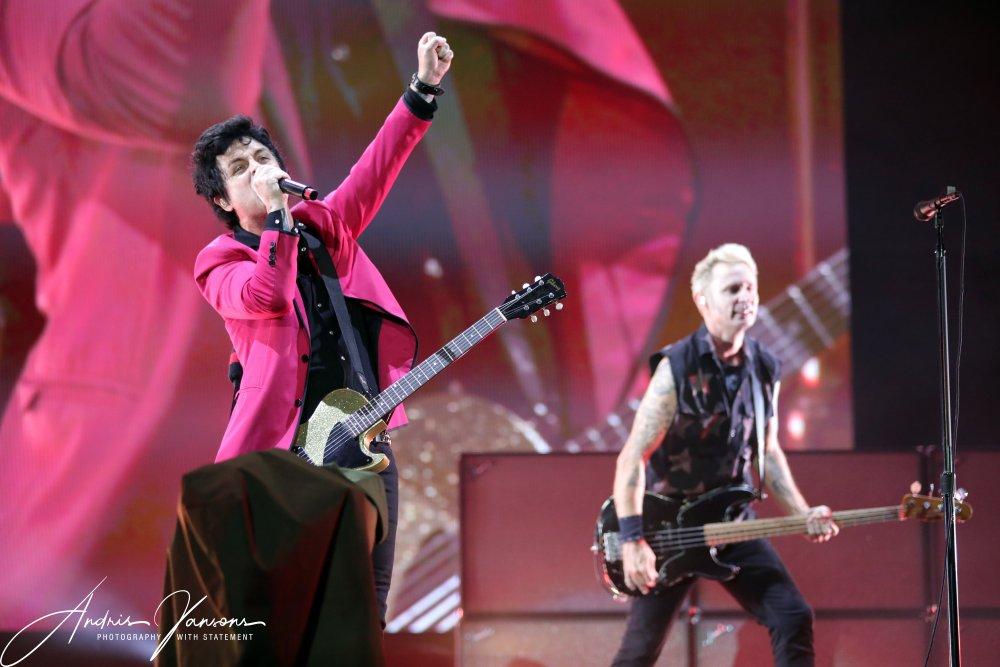
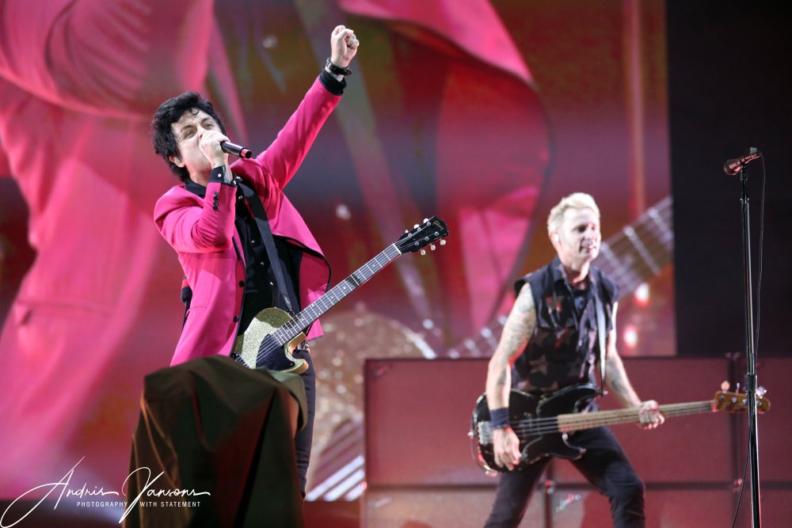

Green Day
Father Of All World Tour
Green Day Saapuu Suomeen
Billie Joe Armstrongin (Kitara, laulu), Mike Dirntin (Basso) ja Tre Coolin (Rummut) muodostama Green Day saapuu suomeen osana Father Of All Maailmankiertuetta. Maailmanlaajuisesti yli 80 miljoona levyä myynyt Green Day tunnetaan hiteistään "Basket Case", "American Idiot", "Holiday, "Boulevard Of Broken Dreams" ja "Wake Me Up When September Ends". Trio tunnetaan erittäin energisenä livebändinä, joka soittaa erittäin pitkiä jopa yli 2 tuntia kestäviä keikkoja.
 

Keikat
Tampere
Nokia Areena
6.9.2022
70€
Helsinki
Helsingin Jäähalli
7.9.2022
70€
Historiikki
Pakettiautolla ansaitsemaan huomiota
Green Day perustettiin vuonna 1989. Kokoonpanon muodostivat Billie Joe Armstrong, Mike Dirnt ja John Kiffmeyer. Levytettyään ensimmäisen albuminsa 1,039/Smoothed Out Slappy Hoursin John Kiffmeyer päätti erota bändistä. Hänen tilalleen värvättiin Tre Cool.
Tällä kokoonpanolla Green Day lähti kasvattamaan mainettaan. He kerkesivät tehdä viisi kiertuetta majoittuen fanien ja ystäviensä luona ennen Lookout! Recordsin huomiota.
Pakettiautosta parrasvaloihin
Huhtikuussa 1993 Green Dayllä oli ensimmäinen ison levy-yhtiön levytys sopimus edessään. Sopimuksen solmimisen jälkeen he alkoivat levyttää albumia. Dookie julkaistiin helmikuussa 1994 ja oli samalla Green Day:n pääsylippu parrasvaloihin.
Dookie oli menestys.
Albumi myi 10 miljoonaa kappaletta yhdysvalloissa ja 20 miljoonaa kappaletta maailmanlaajuisesti. Albumin suosituimmaksi kappaleeksi nousi Basket Case joka on edelleen konserttien vakio kamaa.
Insomniac, nimrod ja aikuistuminen
Seuraavilla albumeilla Insomniac (v.1995) ja Nimrod (v.1997) Green Day pysyi uskollisena punk-musiikille mutta näyttivät myös herkempää puoltaan. Myynnillisesti albumit eivät olleet yhtä onnistuneita kuin Dookie. Albumeilta hiteiksi nousivat Good Riddance (Time Of Your Life) ja Hitch in a ride. Albumien jälkeen yhtyeen jäsenet olivat perustamassa perheitään ja olivat muutenkin kasvaneet aikuisiksi. Yhteisymmäryksessä bändi jäsenet päättivät pitää 2 vuoden tauon ja keskittyä perheisiinsä.
Kuilun partaalta megatähteyteen
Vuonna 2000 Green Day palasi musiikin pariin julkaisemalla Warning: albumin. Albumi poikkesi edellisistä tuotoksista selvästi, olemalla melodisempi ja rauhallisempi. Kriitikot kehuivat albumia mutta fanit eivät ottaneet sitä omakseen. Albumi on yhtyeen vähiten myynyt julkaisu. Albumilta hitiksi nousi Minority.
Vuonna 2000 Green Day julkaisi kokoelmalevyn International Superhits! ja sitä seuraavana vuonna edellisten albumien b-puolista koostuneen Shenanigansin. Shenanigans oli hyppy takaisin juurille ja kriitikot kiittelivätkin albumin nopeita ja simppeleitä ralleja.
Vuonna 2003 yhtye oli saanut nauhoitetuksi uuden albumin Cigarettes and valentines, kun nauhat olivat varastettu. Vastoinkäymisen seurauksena yhtyettä uhkasi hajoaminen mutta he päättivät aloittaa albumin teon tyhjästä uudelleen.
Syksyllä vuonna 2004 yhtye julkaisi menestyneimmän albuminsa American idiotin. Albumilta nousi monta hittiä kuten "American Idiot", "Holiday", "Wake Me Up When September Ends" ja "Boulevard Of Broken Dreams".
Tämän jälkeen Green Dayllä oli tie tähtiin auki.
American Idiot albumin jälkeen yhtye on julkaissut 6 albumia joista uusimpana Father of All Motherfuckers jonka maailmankiertueen pysähdyspaikkana toimii myös Tampere ja Helsinki.